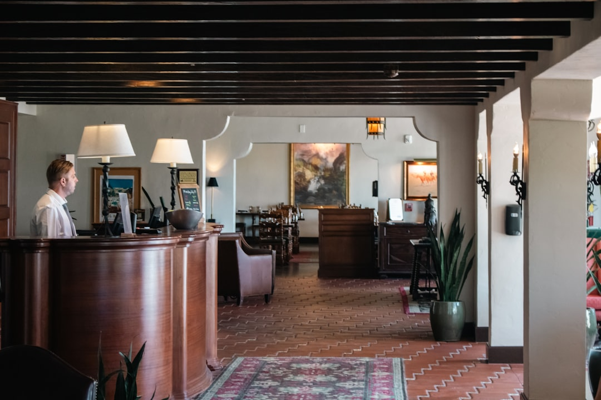

Come Concierge24 Rivoluziona la Gestione delle Richieste Ospiti per Albergatori e Property Manager

Ottimizzare la gestione delle richieste ospiti: la svolta per Albergatori, Gestori di B&B, Property Manager e Agenzie Turistiche
- Le richieste continue e ripetitive h24 degli ospiti, unite alle barriere linguistiche, compromettono qualità e resa operativa.
- I costi nascosti di inefficienza includono spreco di risorse umane e rischi di insoddisfazione clienti, con impatto diretto sul fatturato e reputazione.
- Concierge24, con Giulia, l’assistente AI multilingua 24/7, automatizza check-in, informazioni e consigli personalizzati, migliorando produttività e customer experience.
Analisi approfondita della notizia e delle implicazioni operative
Nel settore dell’ospitalità, la gestione delle informazioni e delle richieste degli ospiti rappresenta uno dei punti critici più impegnativi. La crescente domanda di servizi H24 e la varietà culturale dei turisti creano un contesto in cui l’operatività tradizionale rischia di non far fronte efficacemente al volume e alla complessità delle interazioni. Le richieste frequenti degli ospiti, come check-in anticipato o posticipato, informazioni sul Wi-Fi, prenotazioni di parcheggio o segnalazioni relative a ristorazione locale, rappresentano un flusso costante e spesso ripetitivo che sottrae tempo prezioso al personale. Inoltre, in un mercato globale, la varietà linguale diventa un ulteriore ostacolo che incrementa il margine di errore e rallenta la qualità del servizio.
È quindi imprescindibile per albergatori, gestori di B&B, property manager e agenzie turistiche innovare i sistemi di gestione, puntando sull’automatizzazione intelligente che possa supportare la squadra senza sostituire il tocco umano ma liberandola da compiti routinari e complessi da gestire in multilingua.
Le conseguenze e i costi di non agire
Ignorare queste criticità può tradursi in pesanti limitazioni operative e perdite economiche immediate e future. Le richieste ripetitive, se non gestite con tempestività e precisione, causano ritardi e insoddisfazione, incidendo negativamente sulla reputazione delle strutture ricettive. Ogni minuto speso dal personale nel rispondere a quesiti ripetitivi è un minuto sottratto a compiti a maggiore valore aggiunto, come la personalizzazione dell’esperienza cliente o la gestione di situazioni emergenziali.
Inoltre, le barriere linguistiche contribuiscono a una comunicazione imprecisa, fraintendimenti e difficoltà ad offrire consigli coerenti con le aspettative dell’ospite internazionale. Questo si traduce in recensioni negative, perdita di fidelizzazione e un aumento dei costi operativi dovuti a turni aggiuntivi o necessità di personale specializzato.
Non investire in strumenti di automazione e comunicazione multilingua significa dunque sostenere costi nascosti che spesso superano i risparmi a breve termine, mettendo a rischio la competitività sul mercato, soprattutto in contesti turistici ad alta concorrenza.
Come Concierge24 risolve il problema
Concierge24 si presenta come la soluzione tecnologica ideata da RM Studio per affrontare in modo mirato queste sfide operative. Il cuore del sistema è Giulia, un’assistente AI vocale e testuale, disponibile 24 ore su 24, capace di interagire fluentemente in 10 lingue diverse: il perfetto aiuto per superare le barriere linguistiche con ospiti di ogni provenienza.
Giulia gestisce autonomamente le richieste più frequenti tra cui check-in e check-out digitali, semplificando e velocizzando le procedure di arrivo e partenza. Offre indicazioni su disponibilità di Wi-Fi, parcheggi, servizi dell’hotel e fornisce consigli personalizzati su attrazioni locali, ristoranti e attività, inviando mappe GPS aggiornate e fotografie direttamente sullo smartphone dell’ospite.
Il sistema permette così un alleggerimento immediato del carico sulle reception e sul personale di front office, garantendo allo stesso tempo un servizio continuo e di alta qualità, percepito dagli ospiti come innovativo e attento ai dettagli. La gestione automatizzata delle query ripetitive significa anche un abbattimento dei costi di telefonate e comunicazioni inefficaci, oltre a migliorare sensibilmente tempi di risposta e precisione delle informazioni.
| Gestione Tradizionale | Con Concierge24 |
|---|---|
| Risposte manuali a ogni richiesta da parte del personale, con sovraccarico operativo. | Automazione AI 24/7 con Giulia che gestisce richieste standard, liberando il personale. |
| Barriere linguistiche e incomunicabilità con ospiti stranieri. | Supporto multilingua in 10 lingue per interazioni fluide e precise. |
| Procedimenti di check-in/out tradizionali che rallentano l’accoglienza. | Check-in e check-out digitali gestiti da assistente AI, rapidi e comodi. |
| Consigli su ristoranti e attrazioni forniti manualmente, rischio di informazioni obsolete. | Suggerimenti dinamici con mappe GPS e foto inviate direttamente allo smartphone. |
| Costi e tempi di formazione elevati per gestire richieste multilingua. | Soluzione scalabile e immediata senza necessità di formazione avanzata. |
💡 Ti è stato utile questo approfondimento?
Condividilo con un collega o un amico del settore Albergatori, Gestori di B&B, Property Manager e Agenzie Turistiche a cui potrebbe interessare!
FAQ - Domande frequenti per i professionisti dell’ospitalità
1. Concierge24 è difficile da integrare con i sistemi già esistenti in hotel e B&B?
Concierge24 è progettato per una integrazione semplice e rapida con i principali PMS e sistemi gestionali per la proprietà. RM Studio offre supporto completo per la fase di setup.
2. Come viene garantita la sicurezza e la privacy dei dati degli ospiti utilizzando l’assistente AI Giulia?
Concierge24 segue rigorosi standard di sicurezza e compliance GDPR. I dati vengono criptati e gestiti solo per il tempo necessario all’interazione, garantendo massima riservatezza.
3. È possibile personalizzare le risposte e i consigli forniti dall’assistente AI in base alle offerte e servizi specifici della struttura?
Sì, Concierge24 consente una personalizzazione avanzata delle risposte e la configurazione di contenuti aggiornati per offrire esperienze su misura agli ospiti.
Inizia Subito
7 Giorni di prova con 15 minuti inclusi senza carta. Ricariche minuti a consumo da €49.
Fonti Ufficiali e Risorse Esterne
Scopri l'Intelligenza Artificiale per la tua attività
Prova le soluzioni B2B di RM Studio e ottimizza le tue vendite.
Scopri Concierge24